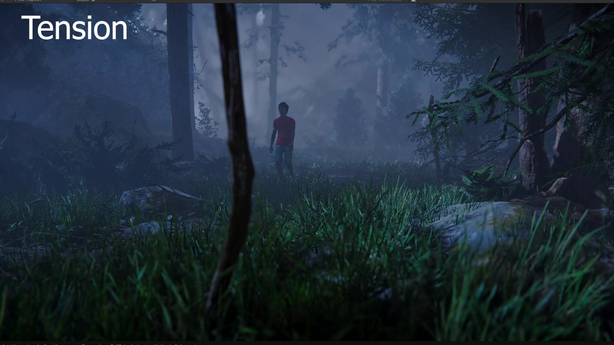
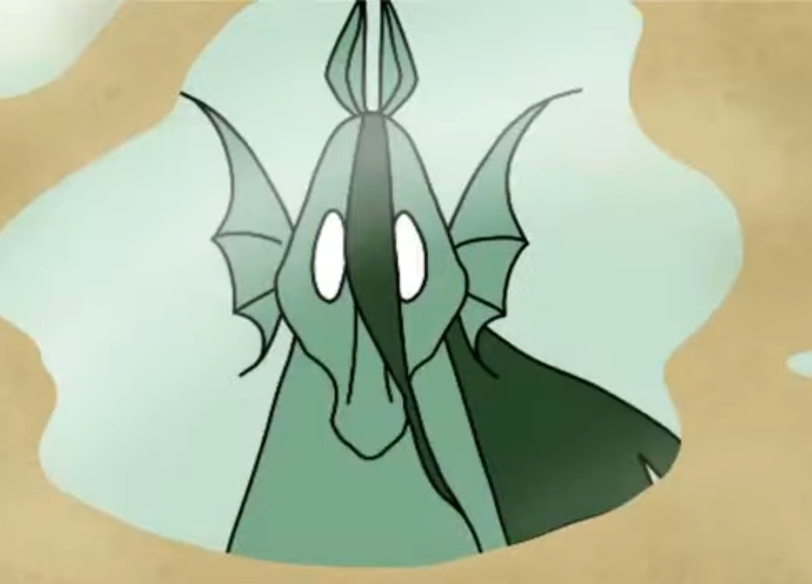
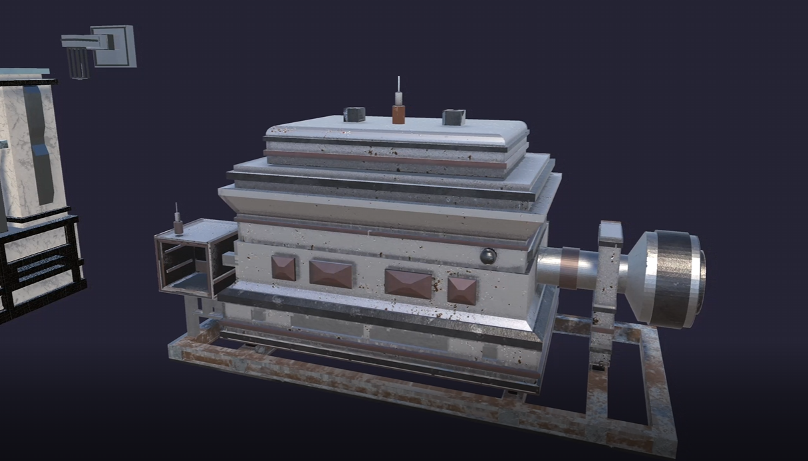

Art & 3D Modeling Projects
3D Historical Train Station Reconstruction
- Group project with the Boise State History Department.
- Recreated the station as it appeared 100 years ago for its anniversary.
- Modeled architectural elements and environment details using archival references and historic photos.
- Collaborated with historians to ensure architectural accuracy and era-appropriate visual detail.
- Created modular assets to streamline scene assembly and maintain visual consistency across the environment.

Cinematic Scenes in Unity
- Created a series of cinematic Unity scenes focused on mood, atmosphere, and visual storytelling.
- Built multiple scene variations to explore different emotions, including tension, calmness, and dramatic environmental tone.
- Used lighting, fog, camera placement, and post-processing to create stronger composition and depth.
- Set up natural environments with downloaded assets, then adjusted placement and visual details to make each scene feel more polished.
- Recorded a final cinematic walkthrough to showcase the different scene styles and atmosphere changes.


Rotoscope 2D Animation
- Created a 2D rotoscope animation by drawing frame-by-frame over live-action footage.
- Focused on motion, timing, and gesture while simplifying shapes and color.
- Explored stylized animation techniques to blend realistic movement with illustrative visuals.
- Enhanced motion clarity by refining silhouettes and exaggerating key poses while maintaining natural flow.
- Applied stylistic coloring and simplified forms to create a clean, cohesive visual aesthetic.


3D Game Model Showcase (Individual)
- Created a series of game-ready 3D models as part of an individual project.
- Handled the full asset pipeline including modeling, UV unwrapping, and basic texturing.
- Prepared assets for real-time engines with clean topology, consistent scale, and proper pivots.
- Rendered final models using professional lighting setups to highlight form, materials, and silhouette.
- Exported assets using proper naming conventions and optimized polycounts for real-time engines.
